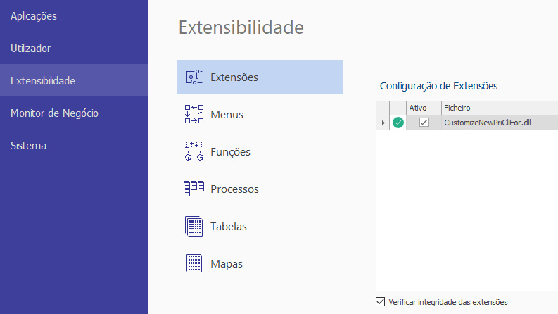
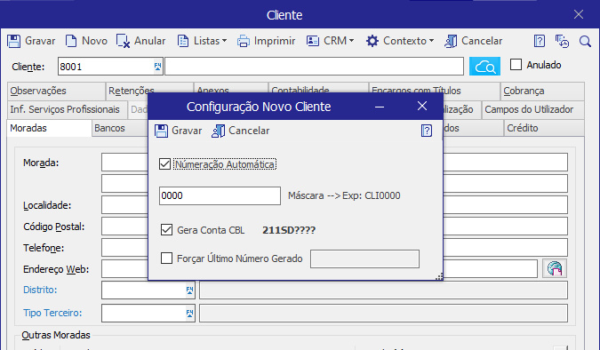
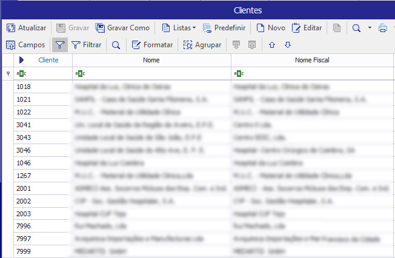
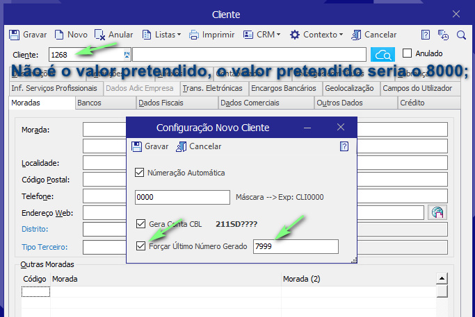
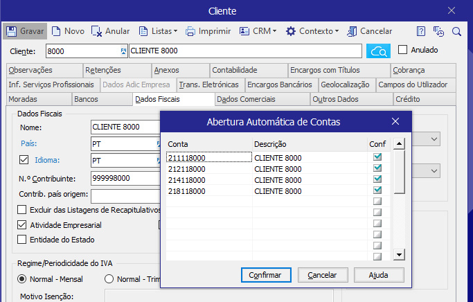
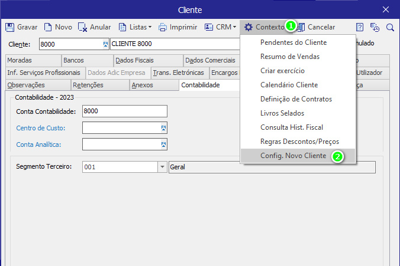

Extensibilidade Primavera - Número Automático de Clientes e Fornecedores
Add-on "CustomizeNewPriCliFor.dll" para o sistema Primavera, visando a numeração automática de clientes e fornecedores mediante configuração de máscara.
Registar e configurar a extensibilidade "CustomizeNewPriCliFor.dll"
Após efetuar o registo da dll deve fechar e abrir novamente a aplicação primavera para que sejam criados corretamente os campos necessários à configuração da numeração automática.

Ao aceder a primeira vez ao editor de Clientes/Fornecedores, irá ser apresentado o configurador da numeração.

Seguindo o exemplo acima após clicar em "Numeração Automática", deve preencher a máscara pretendida de acordo com as necessidades e tendo em conta que caso deseje efetuar a criação automática das contas de contabilidade, o número de digitos não pode ser superior aos digitos usados na máscara de CBL. A máscara de CBL é apresentada caso exista algum exercício contabilístico já criado (211SD????).
As máscaras a usar na numeração podem incluir alfanuméricos no ínicio e no final da máscara desejada que é representada por zeros(0...). Alguns exemplos de máscaras:
- 0000 - máscara simples 4 dígitos
- CL0000 - máscara composta, 2 alfanuméricos + 4 dígitos
- CL0000I - máscara composta, 2 alfanuméricos + 4 dígitos + 1 alfanumérico
O formato da máscara pode ter variantes dentro dos exemplos acima, o que não pode ter é dígitos intercalados com valores alfanuméricos, por exemplo: CL000N0 este tipo de máscara é inválida e não pode ser utilizada.
Assim caso se pretenda a criação automática das contas de CBL basta marcar a check box "Gera Conta CBL"
Em relação à check box "Forçar Último Número Gerado", deve ser utilizado em circunstâncias muito especificas e tendo sempre atenção em usar o maior número inteiro da numeração atual. Isto porque o incremento da numeração é feito de forma automática a partir desse valor inteiro utilizado.
Abaixo temos um exemplo de como pode ser utilizado o forçar da numeração, supondo que estão a ser criados clientes aleatoriamente e sem regra na numeração.

Supondo que o último cliente criado foi o "1267", e o último número inteiro dessa numeração é o "7999", ao definirmos o "7999" como sendo o valor a partir do qual a sequência numérica irá continuar o próximo número de "Cliente" neste caso será o "8000".

Depois de gravar as configurações e fechar a aplicação primavera e voltar a abrir. Na abertura do editor de clientes já irá ter como sugestão de número de cliente: "8000".
Ao gravar a criação do novo cliente caso tenha ativa a criação automática de contas CBL irá surgir a mascara de abertura de contas para confirmar, sem existir a necessidade de indicar o número de conta na aba "Contabilidade - Conta Contabilidade".

Acesso ao configurador de numeração automática
Pode aceder ao configurador no editor de Clientes/Fornecedores, no Drop-Down de "Contexto" botão "Config. Novo Cliente" ou "Config. Novo Fornecedor" , consoante o editor
